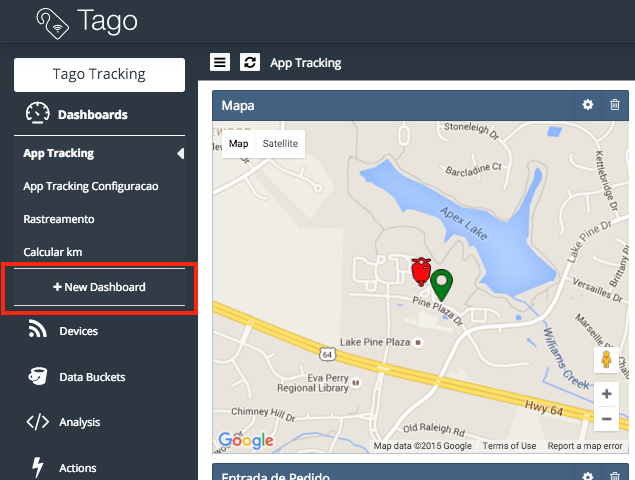
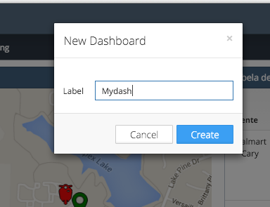
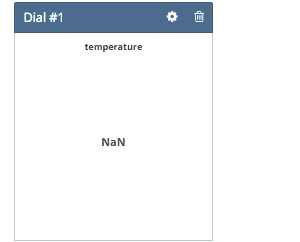

Getting Started¶
Here is how to get started with Tago.io
Log in to Tago.io. If you haven’t created an account yet, signup for free now.
Step 1. Add a device¶
You can start by adding a Device to your account. This will enable a link between your data and the external world. In this example, let’s send a variable called temperature from your device.
On the left side bar, click on Devices. Then, click on Add Device blue button, enter with the name ‘dev01’ and click on ‘Save’.

For each device, you have the option to define a Bucket that will store its data. You can pick a bucket with the same name as the device.
For security, all devices should use a valid Token when accessing Tago. One token is automatically generated when a device is created. Later in this example, you will need this token. Go to the ‘General information’ session of the device, click on ‘QR Code’ or ‘Tokens’ and copy the token code that was created for your device.

Step 2. Build a dashboard¶
You can build great Dashboard to visualize data, interact with your devices and share with others. You can pick the widgets that best fit your needs.
Click on ‘+ New Dashboard’ on the left side bar, type the name of your dashboard, and click on ‘Create’.
 {kind=link}
{kind=link}
Let’s add one widget to show the variable temperature. Click on ‘Add Widget’ blue bottom and pick the widget Dial.
To configure this widget, first you need to add a variable to be displayed. Type the variable name that will be sent by the device as ‘temperature’, click on ‘add’ below the name. Select your bucket [dev01], your device [dev01], click on ‘OK’. Then, click on ‘Create’, and your widget is ready!
Good! As soon as your device start to send data, the values will be showed on this dial.
Step 3. Send data¶
Now you are ready to integrate Tago system with your electronic devices or apps. You can use one of our SDK’s designed for your platform. Or we can simulate your device, by exchanging data remotely with your bucket using curl in a Mac or Linux. Here, you will need to use that token created earlier for your device.

Try to send more data by changing the value of the ‘temperature’ variable. Keep an eye on your dashboard. You should see something like this.
If you are using Windows, you can send data with Postman (https://www.getpostman.com/). Considering the same inputs as above, you will can make a POST using the url, Device-Token in the Postman like this:

Then, input the variable information in the JSON body. Make sure you select the same configuration as showed in the picture below.

The response should looks like this.

Step 4. Explore Tago.io¶
This is just the beginning! Check out how powerful the Tago platform is.
Learn how to Share dashboards and Share Buckets.
Create powerful Analysis in realtime using our script capabilities in Java Script. Take Actions based on your rules.
Learn more about our powerful ref_API_API. And check out the Tutorials prepared for different boards and applications.
Visit our Marketplace! [beta] You will find dashboards ready to be used in interesting applications.